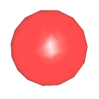
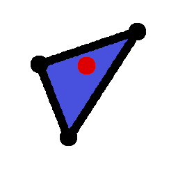
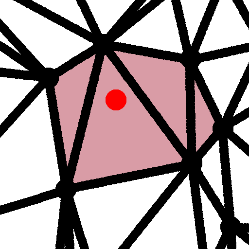
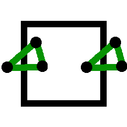

Shows a "Open file" dialog. A readable file is supposed to consist of a list of points that are separated by white spaces. A point has to be represented as a list of three coordinates that again are separated by white spaces.
|
|
Load Points Shows a "Open file" dialog. A readable file is supposed to consist of a list of points that are separated by white spaces. A point has to be represented as a list of three coordinates that again are separated by white spaces. |
| Empty scene Deletes the current triangulation and initializes it with the empty triangulation. | |
| Single point Deletes the current triangulation and computes a new triangulation of one random point. | |
| Random point set Deletes the current triangulation and computes a new triangulation of 30 random points that are uniformly distributed inside the random cube. | |
| Random planar point set Deletes the current triangulation and computes a new triangulation of 10 random points that are uniformly distributed inside the side of the fundamental cube of z=0. | |
|
|
Point grid Deletes the current triangulation and computes a new triangulation of a grid of 36 points. This is exactly the grid for which we know that it has a triangulation in 1-sheeted covering space. So this triangulation is the only one amongst the five initial triangulations that is represented in 1-sheeted covering. |
|  | Flying ball Shows a ball that flies along a constant vector through the fundamental cube to show the periodicity. |
|
|
Pause Stops the ball. |
| Insert point Inserts a point at the current position of the ball. It does not matter whether the ball is shown or not. | |
| Insert random point Inserts a point at a random position inside the fundamental cube. | |
| Grab image Stores a screenshot of what is currently displayed. |
|  | Point location Shows the tetrahedron that currently contains the flying ball. If several periodic copies of this tetrahedron are shown then all of them will be marked. |
|  | Conflict region Shows the tetrahedra whose circumscribing balls currently contain the flying ball. If several periodic copies of a marked tetrahedron are shown then all of them will be marked. |
|
|
Wireframe Draws lines and points instead of the GLU spheres and cylinders. This can accelerate the drawing of large scenes considerably. |
|
|
Planar triangulation Shows only the simplices that are completely contained in the plane z=0. In this mode the flying ball will always be inside the plane z=0 as well as all randomly inserted points. |
| Draw 1-sheeted covering Draw each simplex exactly once, i.e. without periodic copies of itself. Note that the result of this does not necessarily show a triangulation and followingly does not necessarily correspond to the internal representation of the triangulation. This option is activated by default. | |
|  | Draw bordering cells multiply Draw all simplices that have a non-empty intersection with the fundamental cube. This option is activated by default. |
| Draw segments Decide per segment whether or not to draw a simplex. This uses the Periodic_segment_iterator. | |
| Draw triangles Decide per triangle whether or not to draw a simplex. This uses the Periodic_triangle_iterator. | |
| Draw tetrahedra Decide per tetrahedron whether or not to draw a simplex. This uses the Periodic_tetrahedron_iterator. This is the default. | |
| Draw domain (cube/square) Toggle the drawing of the fundamental cube or square in case of a planar triangulation. | |
| Clip along the cube/square Toggle clipping of simplices that are outside of the fundamental cube or square in case of a planar triangulation. | |
|
|
2-color clipping Show the clipped part of edges in a different color. This option is only active if clipping takes place. |